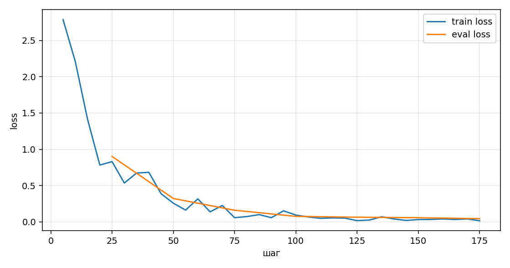

День 7. Свой датасет
Модель учится по фразе человека выбрать один инструмент рабочего помощника и ответить одним JSON. Каталог MCP в запрос больше не кладётся.
Итог
Верный ответ — один JSON: имя инструмента и аргументы совпали с эталоном, либо текст уточнения совпал дословно. На этом счёте дообучение обошло проработанный промпт, 23 против 5. Случаев, где промпт попал в эталон, а адаптер промахнулся, нет. Чтение ответов всё же находит два места, где текст адаптера ушёл дальше от эталона: выдуманное summary «пастснабжати» и номер NOTE-11, записанный как НЕСЧЕТ_11.
Короткий промпт обучения не перечисляет инструменты. Их имена сидят в весах. Вход на контрольном вопросе в среднем 55 токенов против 843 у каталога.
В сервер помощника адаптер не подключался. Продуктовая модель по-прежнему qwen2.5:3b в Ollama. Учили Qwen2.5-0.5B-Instruct: на s1 нет NVIDIA, а 3B в fp32 рядом с GitLab и Ollama не помещается.
Задача
Узкое повторяющееся действие: человек пишет свободно, модель за один ход либо вызывает один из восьми инструментов MCP, либо задаёт одно из четырёх фиксированных уточнений. Вид активности выбирает модель, код фразу не разбирает.
Верный ответ — весь текст модели является одним JSON, без пояснений и без markdown.
{"tool":"activities_log","arguments":{"summary":"разобрал замечания по авторизации","on_date":"2026-10-28"}}
{"clarify":"Это журнал, план, беклог или спринт?"}
Совпадение считается так. Имя инструмента точное. Дата, номер и ссылка точные и только если их назвали. Summary, query и текст уточнения сравниваются после нижнего регистра, замены «ё» на «е» и сжатия пробелов. Лишний ключ, пустая строка и выдуманный номер делают ответ неверным.
Инструменты те же, что в WorkMcp.kt: activities_log, activities_schedule, activities_backlog, activities_add_to_sprint, activities_list_day, activities_plan, activities_list_sprint, activities_find. «Сегодня», «вчера» и «завтра» считаются от даты в первой фразе сообщения. Если вид не назван, эталон — уточнение, а не угаданный инструмент. Просьба сделать и план, и спринт сразу тоже уточнение: в этом датасете один ход — одно действие.
Готовых логов фраз в сервисе нет: помощник не хранит размеченный корпус «фраза → вызов». Эталоны написаны по контракту инструментов. Контрольные 36 фраз записаны вручную. Обучающие собраны шаблонами вокруг других фактов, номеров и ссылок.
База до обучения
Одна и та же Qwen2.5-0.5B-Instruct, жадная генерация, до 160 новых токенов. Контрольный набор из 36 фраз в обучение не входил. Сегодня в каждой фразе — 2026-10-28.
| Верно | Верный инструмент | Целый JSON | Токены входа | Время | |
|---|---|---|---|---|---|
| Без инструкций | 0 / 36 | 0 / 36 | 0 / 36 | 58 | 11 мин 12 с |
| Каталог и правила | 5 / 36 | 12 / 36 | 34 / 36 | 843 | 9 мин 21 с |
Без инструкций модель отвечает прозой. Пять точных попаданий промпта — простые записи в журнал и план и поиск по APP-17: e01, e07, e08, e10, e27. На остальных она подставляет номер, которого не было, путает чтение журнала с записью и на «привет» пишет журнал.
Текст проработанного промпта лежит в challenge/day7/prompt_worked.txt. Там правила из системного промпта помощника, восемь инструментов с аргументами, четыре фразы уточнения и два примера. Примеры про «сверил остатки» и «купить лицензию» в train не входят.
Эти 5 из 36 — планка, которую обучению нужно было перейти.
Датасет
Формат дня 6: ChatML, три реплики. В system короткая инструкция, в user дата и фраза, в assistant эталонный JSON. Лосс считается только по реплике assistant.
<|im_start|>system
Ответь одним JSON без пояснений и без markdown.<|im_end|>
<|im_start|>user
Сегодня 2026-09-05. Какие записи журнала были вчера?<|im_end|>
<|im_start|>assistant
{"tool":"activities_list_day","arguments":{"date":"2026-09-04"}}<|im_end|>
| train | 236 |
|---|---|
| valid | 42, loss во время обучения, в train нет |
| eval | 36, руками, ни в train, ни в valid |
| seed | 42 на сборке и на разбиении |
Доля в train. Самый частый вид — журнал и план, по 31 примеру, это 13%. Уточнения вместе — 45 из 236, 19%.
| Вид | train | valid | eval |
|---|---|---|---|
| журнал | 31 | 5 | 9 |
| план | 31 | 5 | 4 |
| беклог | 24 | 4 | 3 |
| спринт | 24 | 4 | 3 |
| поиск | 24 | 4 | 4 |
| чтение журнала | 20 | 4 | 3 |
| чтение плана | 20 | 4 | 3 |
| список спринта | 17 | 3 | 1 |
| уточнить вид | 19 | 3 | 2 |
| уточнить день | 10 | 2 | 1 |
| приветствие | 8 | 2 | 2 |
| план и спринт сразу | 8 | 2 | 1 |
Чистка
Точный повтор фразы выбрасывался. Один и тот же шаблон с подставленной датой оставлялся не больше двух раз. Близкие к контрольным фразам, порог похожести 0.92 после маски даты, в train не попадали. Сборка отбросила 68 повторов шаблона и 5 близких к eval. Пересечение train, valid и eval скрипт проверяет и падает, если оно есть. То же повторно проверяет train.py перед стартом.
Случайные 30 примеров, seed 7, лежат в review30.jsonl. Первый просмотр нашёл неверный тон ответа: в план, беклог и спринт подставлялись факты в прошедшем времени, «запланируй: починил сброс фильтра». Инструмент и дата при этом были верные, но эталон учил модель копировать уже сделанное дело как план. Факты разведены: журнал — прошедшее время, план, беклог и спринт — инфинитив. Набор пересобран, те же 30 мест просмотрены снова.
Во втором просмотре инструмент, дата, номер и ссылка совпадают с фразой. «Заказать доступ к журналам» остаётся уточнением: слово «журнал» здесь не команда записать день. Шероховатость, которую оставил: «на завтра в журнал» всё ещё диктует уже сделанное дело. Ответ по правилу верный, фраза живой речи не похожа. В тридцатке чаще обычного попадался список спринта; по всему train его 17 из 236, перекоса в один вид нет.
Обучение
LoRA в fp32 на s1, контейнер lora-lab, лимит 6 ГБ и 3 CPU. QLoRA в 4-bit через bitsandbytes требует CUDA, видеокарты нет. Адаптер трогает q_proj, k_proj, v_proj, o_proj. Ранг 8, alpha 16, dropout 0.05. Обучаемых параметров 1 081 344 из 495 114 112, это 0,22%.
| Модель | Qwen/Qwen2.5-0.5B-Instruct |
|---|---|
| Железо | Intel Core i5-4278U, 2 ядра, 16 ГБ, CUDA нет |
| Эпохи | 3, batch 1, накопление градиента 4, 177 шагов |
| Оптимизатор | AdamW, learning rate 2e-4, cosine, warmup 5%, weight decay 0.01 |
| Старт | 28 октября 2026, 20:18 МСК |
| Конец | 28 октября 2026, 21:02 МСК |
| Чистое обучение | 44 минуты 3 секунды |
| Средний train loss | 0.354 |
| Valid loss в конце | 0.044 на шаге 175 |

| Шаг | Train loss | Valid loss |
|---|---|---|
| 5 | 2.786 | — |
| 25 | — | 0.901 |
| 50 | 0.257 | 0.322 |
| 75 | — | 0.160 |
| 100 | 0.094 | 0.076 |
| 125 | — | 0.064 |
| 150 | 0.032 | 0.057 |
| 175 | 0.015 | 0.044 |
Адаптер сохранён на s1: /home/troot/lora-day7/output/adapter. В git веса не клал.
Сравнение на eval
Три прогона на одних и тех же 36 фразах. База без инструкций не дала ни одного JSON, в таблице она везде «нет». Дальше сравниваются каталог и дообученная модель с коротким промптом. «Лучше» значит, что верный JSON появился только у адаптера. Таких 18. Ещё 5 верны у обоих. 13 мимо у обоих.
| Вид | Каталог | LoRA |
|---|---|---|
| журнал, 9 | 3 | 9 |
| план, 4 | 1 | 4 |
| беклог, 3 | 0 | 3 |
| чтение журнала, 3 | 0 | 3 |
| чтение плана, 3 | 0 | 1 |
| список спринта, 1 | 0 | 1 |
| поиск, 4 | 1 | 2 |
| спринт, 3 | 0 | 0 |
| уточнения, 6 | 0 | 0 |
| Фраза | Каталог | LoRA | |
|---|---|---|---|
| e01 | Запиши в журнал: разобрал замечания по авторизации. | да | да |
| e02 | Вчера в журнал: созвон с поддержкой по таймаутам. | нет | да |
| e03 | В журнал за 2026-10-01: выложил отчёт. | нет | да |
| e04 | Запиши в журнал APP-17: починил падение при пустой дате. | нет | да |
| e05 | В журнал: посмотрел макет и ссылка. | нет | да |
| e06 | Журнал WEB-4 и ссылка: закрыл ревью. | нет | да |
| e07 | Сегодня вечером в журнал: дописал отчёт. | да | да |
| e08 | В журнал: починил поиск. | да | да |
| e09 | В журнал по задаче DATA-2: сверил выгрузку. | нет | да |
| e10 | На завтра запланируй: написать тесты на поиск. | да | да |
| e11 | Поставь в план на сегодня: обновить документацию API. | нет | да |
| e12 | В план на 2026-11-02 по API-9: описать ошибку даты. | нет | да |
| e13 | Запланируй на сегодня: сверить контракт очереди. | нет | да |
| e14 | В беклог: разобрать старые сессии чата. | нет | да |
| e15 | Отложи в беклог OPS-3: ротация логов. | нет | да |
| e16 | Положи в беклог: завтрашний отчёт для команды. | нет | да |
| e17 | В спринт: поднять покрытие ToolArgs. | нет | нет |
| e18 | В спринт: страница заметок и ссылка. | нет | нет |
| e19 | Добавь в спринт NOTE-11: сверить комиссии. | нет | нет |
| e20 | Что я уже записал в журнал сегодня? | нет | да |
| e21 | Покажи журнал за вчера. | нет | да |
| e22 | Журнал за 2026-09-15. | нет | да |
| e23 | Что запланировано на завтра? | нет | нет |
| e24 | План на 2026-10-30. | нет | нет |
| e25 | Покажи план на сегодня. | нет | да |
| e26 | Что сейчас в спринте? | нет | да |
| e27 | Найди всё по APP-17. | да | да |
| e28 | Поищи записи про таймауты. | нет | нет |
| e29 | Найди ссылку на sprint-notes. | нет | нет |
| e30 | Есть ли записи про пустую дату? | нет | да |
| e31 | Созвон с Ирой по релизу. | нет | нет |
| e32 | Добавь задачу про отчёт. | нет | нет |
| e33 | Что у меня на сегодня? | нет | нет |
| e34 | Привет. | нет | нет |
| e35 | Спасибо. | нет | нет |
| e36 | Запланируй на завтра и добавь в спринт: релиз заметок. | нет | нет |
Вчерашняя дата
e02. Эталон — журнал на 2026-10-27.
Чтение журнала
e20. «Что я уже записал в журнал сегодня?» Эталон — activities_list_day на 2026-10-28. Каталог вызвал activities_log с summary «не указан». Адаптер вернул чтение журнала за этот день.
План с номером
e12. Каталог открыл чтение плана и потерял задачу. Адаптер записал план на 2026-11-02, summary «описать ошибку даты», номер API-9.
Где стало хуже
По строгому счёту адаптер не проиграл ни одного уже верного ответа. Ниже места, где оба мимо, но текст адаптера дальше от эталона, и где модель разучилась отвечать на обычные вопросы.
e18, summary развалилось
Эталон: спринт, summary «страница заметок», ссылка целиком. Каталог оставил слова «страница заметок» внутри summary и продублировал ссылку в номер. Адаптер сохранил ссылку и написал summary «пастснабжати».
e19, номер переписан
Эталон: NOTE-11 и «сверить комиссии». Каталог номер сохранил и добавил пустой link. Адаптер записал номер как НЕСЧЕТ_11.
Спринт и уточнения
Все три записи в спринт мимо. e17 вызвал верный инструмент, отрезал ToolArgs и завёл номер tool_args. e28 нашёл нужный поиск, но query стал «таймаут» вместо «таймауты». e29 сжал ссылку до sprint_notes и добавил дату.
«Что запланировано на завтра?» и «План на 2026-10-30» оба прогона приняли за запись плана, не за чтение. «Покажи план на сегодня» адаптер прочитал верно.
Шесть уточнений мимо у обоих. На «привет» и «спасибо» адаптер хотя бы спрашивает, но фраза не та: «Это журнал, план, беклог или спринт?» вместо «Что записать или показать?». «Что у меня на сегодня?» получило приветственное уточнение. «Созвон с Ирой» записан в план на сегодня, хотя вид не был назван. Два действия сразу схлопнулись в один спринт.
Обычные вопросы
Четыре фразы вне задачи, в счёт 36 не входят. Без инструкций база отвечает по делу: Париж, 51, дождь, числа 2, 3 и 5. После каталога она уже пытается звать инструменты. После LoRA обычный вопрос стал вызовом несуществующего инструмента.
| Без инструкций | После LoRA | |
|---|---|---|
| Столица Франции? | Париж | activities_list, query «Столица Франции» |
| 17 умножить на 3 | 51 | уточнение «Это операция, не число.» |
| Предложение про дождь | проза про осень | activities_suggest |
| Три простых числа | 2, 3, 5 | activities_find |
Токены
Короткий system — одна фраза про JSON. Имена инструментов, даты и запрет выдумывать номер модель берёт из примеров. Каталог каждый раз повторяет восемь описаний, правила и два примера.
| Без инструкций | 58 токенов, 0 верных |
|---|---|
| Каталог | 843 токена, 5 верных |
| Короткий промпт и LoRA | 55 токенов, 23 верных |
Выигрыш есть на журнале, плане, беклоге и чтении дня. Его нет на уточнениях и на записи в спринт, и его нет на вопросах не про работу. В продукт это имеет смысл ставить только на ход, где уже известно, что человек говорит про активности. Иначе модель забудет отвечать на всё остальное.
Файлы
challenge/day7/dataset/train.jsonl— 236valid.jsonl— 42eval.jsonl— 36review30.jsonl— просмотренные 30stats.jsonprompt_worked.txtchallenge/day7/output/base.json,tuned.json,loss.jsonl,run_meta.json- адаптер на s1:
/home/troot/lora-day7/output/adapter